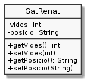

Exercici 30_12. Posició sempre correcta
Exercici 30_12. Posició sempre correcta
Context
Carpeta de lliurament:
30_12_posicio_correcta/Continguts relacionats: Propietats protegides
Com lliurar-lo: instruccions
[✓] Exercici amb autoavaluació
Enunciat
En aquest exercici, torna a afegir la propietat posicio que vas
incorporar a l'exercici Renat té posició.
En aquesta ocasió, fes la propietat privada i implementa els accessors de
manera que garanteixis que la posició del Renat sigui sempre correcta, a
l'hora que pugui ser canviada.

Recorda que les posicions vàlides del gat Renat són exactament: "dret",
"assegut" i "estirat".
En cas que el setter de posicio rebi un valor no vàlid, mantindrà el
valor de la propietat sense modificar. És a dir, es comportarà igual que
setVides().
Completa la següent plantilla:
1 public class UsaGatRenat {
2 public static void main(String[] args) {
3 GatRenat renat = new GatRenat();
4 System.out.println("Les vides inicials són: " + renat.XXX);
5 System.out.println("La posició inicial és: " + renat.XXX);
6 System.out.println("Introdueix nova posició:");
7 renat.setPosicio(Entrada.readLine());
8 System.out.println("La posició final és: " + renat.XXX);
9 }
10 }
El programa, en ser executat, mostrarà la següent sortida:
Les vides inicials són: 7
La posició inicial és: estirat
Introdueix nova posició:
assegut
La posició final és: assegut